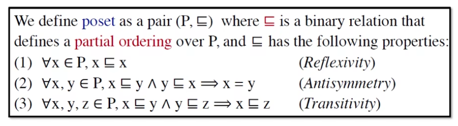
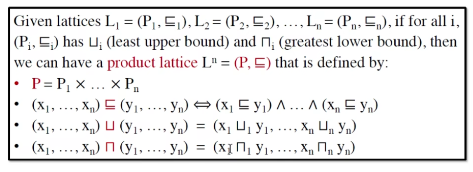
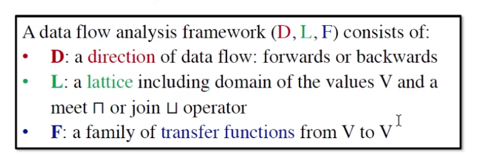
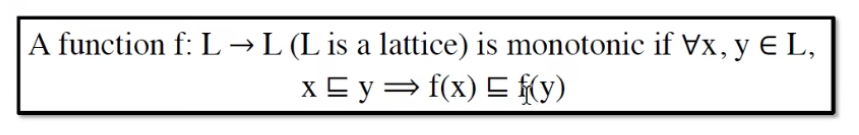
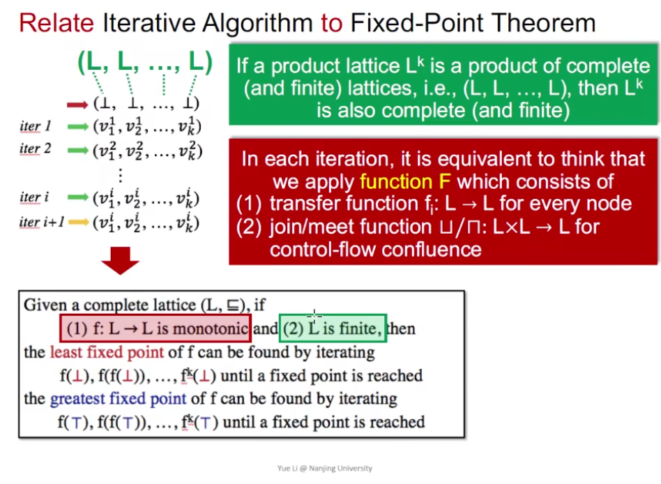
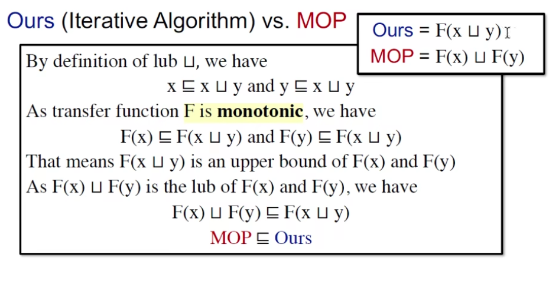
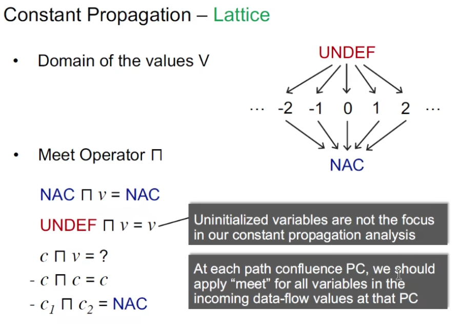

Note: Data Flow Analysis - Foundations
Iterative Algorithm

从更抽象的角度来审视我们的迭代算法，每个块（CFG 里的节点）都会有状态，那么整个程序里所有块能组成一个 k 维向量。
迭代每个节点的时候其实就是对 Block 作函数转换。
我们迭代的停止条件是【一次迭代后 tuple 没变】，其实就到达了不动点

不动点：
数学上不动点的定义： $$ X = F(X) $$
为什么标题叫 foundation：domain 并不止之前学的三种，我们可以分析更多的代码性质
三个问题，后面会得到解决：
-
iter algo 一定能找到不动点吗？（算法一定会停下吗？）
- 我们针对前面三种 domain 分析过，会停
- 但是这是一个普遍的结论吗？对其他的 domain 呢
-
如果一定能停，一定有唯一的不动点吗？
-
什么时候能到达不动点？
Partial Order (偏序)
poset 偏序集
满足下面三个要求的就是合法的偏序关系
-
自反 reflexivity
-
反对称 antisymmetry
-
传递 transitivity

例子1：
( integer, <= ) 是不是偏序集？
- 性质都满足，是
例子2：
( integer, < ) 是不是偏序集？
- 不满足自反，不是
为什么叫偏序？不是全部元素都能比较
（需要记住这个图，<abc, 包含关系> 组成的全格）
Upper & Lower Bounds （上下界）

- x 不一定在 S 里
- 最小上界 lub => join
- 最大下界 glb => meet
- 不是所有偏序集都有 lub 或者 glb
- 如果 poset 有 lub 或者 glb，那么 lub 和 glb 一定是唯一的（用反对称性很容易证明：互相对同一个关系成立就一定是同一个）
Lattice（格）

poset 中每一对元素都存在最大下界和最小上界（大白话：两个元素都会 meet (∩) 和 join (∪) ）
- (integer, <=) 是不是 lattice？
- 是，任意两个数可以 meet 和 join
Semilattice（半格）
- P 里任意两个元素都有 lub 和 glb，就是半格
Complete Lattice（全格）

- 任意 P 的子集都会有 lub 和 glb 就是全格
- (integer, <=) 是不是 compete lattice？
- 否，整数集不符合（找不到最小的上界/最大的下界）

- 每个有穷的格一定是完全格
- 反命题为伪：{ [0,1]小数集, < } 完全且无穷：任意子集都能找到一个上下限
Product Lattice

- 每个 L 都是 complete，那么组成的 product lattice $L^n$ 也是 complete 的
Data Flow Analysis Framework via Lattice
其实是 semi，但是用 lattice 来表示更加方便
定义一个 Data flow analysis 的框架：由 <方向、格、转换函数> 组成

例子：

- 顺序是反过来的（ Block 的执行流跟格的方向）
- {a, b, c} 用 bit vector 表示就是 111, {} 就是 000

Data flow analysis 的本质：在一个格上迭代一个 transfer、并不断 meet 和 join
回答前面的问题：
- 迭代算法一定能达到不动点吗
- OUT never shrinks (monotonicity)
- 如果能，可能有多个不动点吗
- 可以
- 如果有多个不动点，能不能找到最好的（迭代次数最少）
- 可以
Monotonicity

不动点定理

- 全格、单调、有限 => 就能迭代出最优的不动点
- complete 不一定 finite
求证:
- 存在不动点
- 迭代得到的不动点最小
证明：
- fixed point exists

- least fixed point
数学归纳法: 假设 k 成立 + 证明初始成立 => 证明 k + 1 成立 => 定理成立

证出来是 unique fixed point
Relative between Iter Algo & Fixed Point Theorem
迭代算法能不能关联上不动点定理？能关联上才能说这个迭代算法能找到最优的不动点。
直觉上的证明：

- 单调：OUT 不会 shrink (gen - kill 单调)
- 有限：很显然，集合是有限的，集合的有限次幂也是
多少次迭代能到达不动点？

- 最坏情况 k 个块 (nodes in CFG，在 example 的视角就是一个比特)、高度 h，最坏情况是 i = h * k 次迭代
May and Must Analysis, a Lattice View
May
在 Reaching Definition Analysis 里，1 是能 reach，0 是不能 reach，即在程序终点这个地方，有哪些定义是可能被用到的。
我们从空集去找，就是我们从敢说程序里所有的定义都不会被消费到，显然是不对的，我们从不安全的一个状态去找到安全的一个点。
注意 bottom 是 Basic Blocks 的顶点，也就是程序的开始
一定会找到最小不动点，前面证明过了
top 是最没用的（相当于整个程序里的定义全部都可能到达末尾，能到结束的定义都在里面，但是有部分并不会到，所以是安全的，做了一些多余的防范）
Must
May Analysis 是从错里面去改正，Must 是从对的里去找错，前者是 sound 的，后者是 complete 的。
How Precise is Our Solution
有些分支永远不会执行如 if (false) ，我们依然认为这条分支里的数据是有用的，这样就造成了失真
Meet-Over-All-Paths Solution (MOP)
假设有个程序 P = Entry -> S1 -> S2 -> … -> Si
$$ MOP[S_i] = ∪/∩ F_p(OUT[Entry]) $$
MOP 会计算 data-flow 的值，然后把他们 meet / join
- 之前的迭代算法是 bfs，一边 meet/join 一边走，MOP 是 dfs，把 path 走完再 meet/join
Iter Algo VS MOP

- 谁更准：MOP
什么时候等于？

- F 有可分配性
- 之前的三个分析都是可分配的
Constant Propagation
作业：


V 集合有三种类型的值：
- 未定义（Undefined）
- 某个具体值
- 非常量（Not A Constant）


在上面的例子里，显然 MOP 更准。肉眼可见 c 是个常量，只看结果
Worklist Algorithm
是对 Iterative Algorithm 的优化
Iter Algo 的缺点：只要有一个 Block 发生变化，就要把全部都重新算一遍
- 把发生变化的丢队列里，然后只计算需要更新的